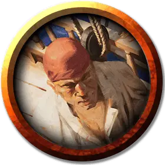

Первый помощник пират
Pirate First Mate
Средний Гуманоид (Любая раса), любое мировоззрение

Класс Доспеха 16 (кольчуга)
Хиты 26 (4к8 + 8)
Скорость 30 футов
| мод | спас | ||
|---|---|---|---|
| СИЛ | 14 | +2 | +2 |
| ЛОВ | 11 | +0 | +0 |
| ТЕЛ | 14 | +2 | +2 |
| мод | спас | ||
|---|---|---|---|
| ИНТ | 11 | +0 | +0 |
| МДР | 10 | +0 | +0 |
| ХАР | 13 | +1 | +1 |
Навыки Атлетика +4, Запугивание +3
Чувства пассивное Восприятие 10
Языки Один любой язык, обычно Общий
Опасность 1 (200 опыта)
Бонус мастерства +2
Особенности
Морская качка. Первый помощник с преимуществом совершает проверки характеристик и спасброски, чтобы не быть сбитым с ног.
Действия
Мультиатака. Первый помощник совершает две атаки Длинным мечом.
Длинный меч. . Рукопашная атака оружием: +4 к попаданию, досягаемость 5 футов, одна цель. Попадание: 6 (1к8 + 2) рубящего урона или 7 (1к10 + 2) рубящего урона, если используется двумя руками. Если целью является существо, первый помощник может выбрать не наносить урона атакой, чтобы обезоружить цель. Цель должна преуспеть в спасброске Силы Сл 14, иначе роняет один предмет, который она держит, на землю.
Описание
Эти серьезные моряки - надежные союзники капитана пиратского корабля. Бывшие солдаты и обученные наемники часто находят работу в качестве помощников на борту пиратских кораблей. В "Зловещей тайне Солтмарша" Кровавый Бьорн служит первым помощником на борту "Морского призрака".